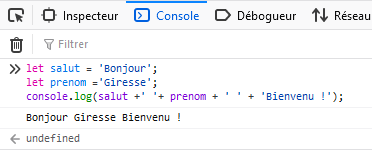

Cette leçon introduit les structures de contrôle conditionnelles if et switch. La leçon introduit également deux nouveaux types de donnée, le type booléen et le type Date.
Maîtriser les concepts de code conditionnel, d'expression booléennes et de test. Savoir écrire des codes simples utilisant les structures de contrôle if et switch. Savoir utiliser le type Date.
La forme ifest une structure de contrôle qui peut modifier le déroulement linéaire d'un programme et permettre d'exécuter des portions de code de manière conditionelle. Soit la phrase/situation réelle suivante :
Exemple: Code Js qui dit: S'il pleut, je prends mon parapluie, sinon, je prends mes lunettes de soleil !
Dans cet exemple, l'utilisateur est sensé saisir le mot pluie ou le mot soleil, et le code affiche le message adéquat. L'instruction if commence avec le mot-clef if immédiatement suivi d'un test. Un test est une expression booléenne (une peu comme une expression arithmétique) qui délivre seulement deux valeurs possibles, true (vrai) ou false (faux). Dans l'exemple précédent, le test est construit à l'aide de l'opérateur == qui teste l'égalité de deux expressions. On teste ici si le contenu de la variable temps est égal à la chaîne de caractères "pluie". Si c'est le cas (donc si la valeur de l'expression booléenne est true), seul le code placé dans le bloc juste suivant est exécuté, sinon (donc si la valeur de l'expression booléenne est false), seul le code placé dans le bloc suivant le mot-clef else est exécuté.
Une erreur très classique et très fréquente consiste à utiliser l'affectation = à la place de ==, l'opérateur de comparaison. Malheureusement, JavaScript ne vous préviendra pas si vous faites cette erreur et vous passerez pas mal de temps à détecter le problème !
Remarquez que dans l'exemple précédent, si l'utilisateur saisit n'importe qu'elle chaîne de caractères différente de "pluie", le code prend la branche "else" du if. Dans ce genre de situation, on peut utiliser la fonction confirm. Cette fonction ouvre une fenêtre avec un message à la manière de la fonction alert, mais l'utilisateur a maintenant deux boutons sur lesquels cliquer : le bouton OK ou le bouton Cancel. Si le bouton OK est cliqué, la fonction retourne la valeur true, sinon elle retourne la valeur false. En utilisant cette fonction, le code précédent devient :
Notez que dans ce nouvel exemple, on utilise directement la fonction en place du test, ce qui ne pose pas de problème pusique l'appel d'une fonction qui délivre une valeur est bien une expression. On pourrait cependant développer ce code et ajouter une étape en utilisant une variable
Reprenez l'exercice 6 de la leçon 2, en ajoutant la fonctionnalité suivante : après avoir saisi les prénom et nom de l'utilisateur, le programme demande le sexe (homme ou femme) à l'utilisateur, et affiche le message en conséquence (le message commencera alors par "Bonjour Monsieur ..." ou bien "Bonjour Madame ...").
Il est possible de combiner toutes les structures de contrôle entr'elles et autant de fois qu'on veut. Par exemple, on peut mettre une nouvelle forme if dans la partie then et/ou else d'une forme if. Par exemple, la nouvelle situation phrase/situation réelle suivante :
Exemple : S'il pleut, alors, s'il vente alors je prends mon K-way sinon je prends mon parapluie, sinon je prends mes lunettes de soleil !
peut être transcrite en JavaScript de la façon suivante :
Le code précédent est correctement indenté pour faciliter sa lecture. Cette indentation rend compte de la structure imbriquée des deux formes if. Cependant, cette indentation est ignorée par JavaScript pour qui seuls comptent les blocs délimités par les accolades ( les caractères { } ). Bien indenter son code est absolument fondamental si vous voulez réussir à écrire des codes complexes dans un temps raisonnable !
Reprenez l'exercice 1 de cette leçon, cette fois en distinguant les dames et les demoiselles : dans le cas où l'utilisateur est une femme, le programme lui demande si elle est mariée, et affiche le message en conséquence (le message commencera alors par "Bonjour Monsieur ..." ou bien par "Bonjour Madame ..." ou par "Bonjour Mademoiselle ...").
Un opérateur en JS est un symbole qui est utilisé pour des opérations, actions ou instructions sur des variables.
nous utilisons depuis le départ de ce cours sur le JavaScript, l'opérateur = (égal). Il nous permet d'assigner une valeur à une variable, L'opérateur =fait partie de la famille des opérateurs d’affectation ou d’assignation.
Il existe différents types d’opérateurs. Ils permettent de réaliser des actions différentes. Ci-après la liste des types d'opérateurs que nous aborderons dans ce cours.
Les opérateurs arithmétiques s'utilisent uniquement avec les variables de type number. Ils permettent d'effectuer des opérations mathématiques entre des variables.
Les différents opérateurs arithmétiques en JavaScript sont les suivants :
| Opérateur | Description |
|---|---|
| + | Permet de réaliser des additions |
| - | Permet de réaliser des soustractions |
| * | Permet de réaliser des multiplications |
| / | Permet de réaliser des divisions |
Notez bien que \n permet en JavaScript de faire un retour à la ligne. C'est l'équivalent du
en HTML.
Il n'existe pas que l'opérateur = (égale) pour assigner une valeur à une variable. Ci-après la liste des opérateurs que nous utiliserons dans ce cours.
| Opérateur | Description |
|---|---|
| ++ | Incrémente de 1 la variable |
| -- | Décrémente de 1 la variable |
| += | Additionne puis affecte le résultat à la variable |
| -= | Soustrait puis affecte le résultat à la variable |
Autre précision, l'opérateur ++ est aussi appelé l'opérateur d'incrémentation et -- est aussi appelé l'opérateur de décrémentation.
Le terme concaténation en JS désigne l'action de mettre bout à bout au moins deux chaînes de caractères.
Tapez ce bout de code et observer le Résultat dans votre console

On dispose en JavaScript plusieurs opérateurs de comparaisons numériques, à savoir :
| Opérateur | Description | Exemple |
|---|---|---|
| == | true si la valeur est égale à | if(azerty == qwerty) |
| != | true si la valeur est différente de | if(azerty != qwerty) |
| > | true si la valeur est différente de | if(azerty > qwerty) |
| < | true si la valeur est strictement inférieure à | if(azerty < qwerty) |
| >= | true si la valeur est supérieure ou égale à | if(azerty >= qwerty) |
| <= | true si la valeur est inférieure ou égale à | if(azerty <= qwerty) |
Nous avons la fonction à valeurs booléennes comme par exemple la fonction isNaN . Cette fonction teste son paramètre et retourne true si celui-ci n'est pas un nombre valide (isNaN est l'acronyme de is-Not-a-Number )
les opérateurs logiques sont utilisés pour combiner des tests de conditions. Grâce à ces opérateurs, il est possible d'ajouter plus d'un test de condition dans une seule instruction if. Ci-après un exemple pour les utiliser.
| Opérateur | Description | Exemple |
|---|---|---|
| && | true seulement si tous les tests de condition sont évalués à true | if(azerty && qwerty) |
| || | true seulement si l'un des tests de condition est évalué à true | if(azerty || qwerty) |
| ! | Inverse la logique d'un test de condition | if(!azerty) |
Ecrivez un programme qui demande à l'utilisateur son prénom (X dans la suite), puis son âge. Si l'utilisateur a moins de 18 ans, le programme affiche un message du type "Désolé X, vous n'avez pas l'âge de conduire". Sinon, le programme demande à l'utilisateur s'il possède le permis de conduire : dans l'affirmative, le programme affiche le message "Au revoir X et bonne route", sinon il affiche le message "Désolé X, il est interdit de conduire sans permis". On suppose que les valeurs fournies par l'utilisateur sont correctes (par exemple, lors de la saisie de l'âge, on est sûr que la chaîne de caractères fournies représente un entier).
Ecrivez un programme qui permet de saisir 3 notes entre 0 et 20, qui calcule et affiche la moyenne obtenue suivie de l'un des commentaires suivants :
Ecrivez un programme qui sert de répétiteur pour apprendre les tables de multiplication. A l'aide de la fonction prompt le programme doit proposer à l'utilisateur une multiplication entre deux nombres tirés au hasard dans l'intervalle [2,10]. Le programme affiche le message adéquat en fonction de la réponse de l'utilisateur. Si la réponse est incorrecte, le programme affiche l'opération et sa réponse (comme par exemple "Faux : 8 x 7 = 56 !"). Pour tirer un nombre au hasard dans un intervalle donné, vous devez étudier et utiliser les fonctions random et floor. Ces fonctions sont définies dans une classe JavaScript qui s'appele Math. Pour appeler une fonction définie dans cette classe, il faut préfixer le nom de la fonction par le nom de la classe. Par exemple, pour appeler la fonction random il faut écrire Math.random() (cette fonction ne prend aucun argument). On suppose que les valeurs fournies par l'utilisateur sont correctes (c'est à dire sont bien des nombres).
La forme switch est une autre structure de contrôle. Elle permet de faire plusieurs tests consécutifs sur la valeur d'une expression. Ce branchement conditionnel peut simplifier le test de plusieurs valeurs possible d'une expression par rapport à des formes if imbriqués, comme par exemple dans le code suivant :
Elle peut être transcrite en JavaScript de la façon suivante :
Chaque cas déclaré par le mot-clef case définit une branche qu'on emprunte quand la valeur de l'expression est égale à la valeur qui suit le case en question. Après le caractère ':' on peut placer autant d'instructions que nécessaire. L'instruction break termine une branche et également l'exécution du switch. On le place donc généralement à la fin d'une branche. Le mot-clef default peut optionnellement définir une branche par défaut : c'est la dernière branche que l'on empruntera si tous les tests précédents ont échoués.
Une erreur très classique consiste à oublié une ou plusieurs instructions break. Dans ce cas, les branches suivant la branche empruntée seront également exécutées. L'absence de break n'est pas une erreur en soi, et dans certain cas, cette absence est volontaire. JavaScript ne signalera donc pas l'absence de l'instruction break et si c'est un oubli de votre part, vous passerez sans doute un peu de temps avant de découvrir l'erreur !
Cette exercice a pour but d'expérimenter l'instruction switch et également de découvrir le type Date. Le type Date permet de manipuler des dates. En particulier, l'expression new Date() retourne un objet de type Date qui contient la date de l'instant ou l'expression a été évaluée par JavaScript. A l'aide de deux instructions switch, écrivez un programme qui affiche la date courante en français (par exemple "lundi 7 septembre 2015").
Cette exercice a pour but d'explorer un peu plus avant le type Date. Dans l'exercice précédent, vous avez utilisé l'expression new Date() pour récupérer un objet de type Date contenant la date courante. Remarquez que le constructeur Date peut prendre en paramètre une chaîne de caractères représentant une date au format ISO 8601 (par exemple "2015-09-07"). Dans ce cas, l'objet de type Date retourné contiendra cette date. En vous inspirant de l'exercice précédent, écrivez un programme qui demande à l'utilisateur de saisir une date sous la forme d'une chaine de caractères au format ISO 8601 et qui affiche le jour de la semaine en français correspondant à cette date. Par exemple, si la date saisie par l'utilisateur est "2015-09-07", le programme doit afficher "lundi 7 septembre 2015". On suppose que les valeurs fournies par l'utilisateur sont correctes (c'est à dire des chaînes de caractères représentant des dates valides au format ISO 8601).